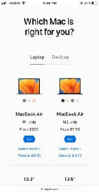
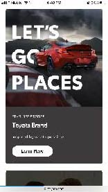
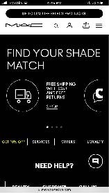

Visual Hierarchy
Apple
Link The Apple website uses a typography, color, and a great layout design to show an effective an clear design with visual hierarchy. In the Picture below we can easily identify what is the most important thing and our eyes are redirected to follow a visual pace trough the hierarchy used. It is awesome how even though this part of the website is pretty simple, it is easy to scan and easy to read. Apple uses text sizes, alignment and white space to present the most important and less important things to their user.
Repetition
Toyota
Link The screenshot belows shows a "card" in the Toyota website. If you scroll and explore the website more you will se that they use this "card" design often to show the services they have. Doing this the website shows repetition but at the same time unity and balance. It also presents a consistent navigation, typography and colors. Using this principle of design trough all their website helps them to reinforce their brand identity to their users. It also help the design to look more organize and formal.
Contrast
Mac Cosmetics
Link The Mac website has contrast everywhere! Their branding colors are hot pink, white and black and that gives them extra point when talking the principles of design that they apply. They use a lot of black and white and that catches the attention of the user inmediately. Also, the mac website uses size to create visual interest and contrast. They use large images to show their products to draw the users attention but they keep using small images or text to support the larger elements.